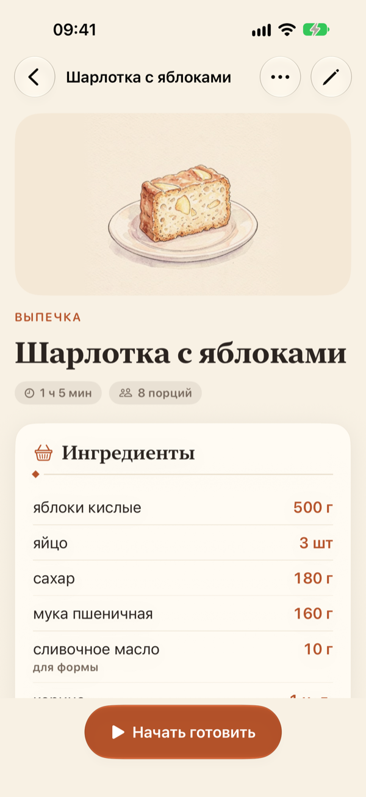

Ваша книга рецептов
Продукты слева, шаги справа. Надиктуйте рецепт голосом, готовьте по шагам с таймерами на экране блокировки и храните семейные рецепты в своём iCloud.
Скачать в App StoreiPhone и iPad · iOS 26 и новее · интерфейс на русском


Что умеет Лакомка
Две колонки
Слева — продукты и количество, справа — шаги. На iPad и в горизонтальной ориентации — рядом, как в настоящей книге.
Диктовка
Расскажите рецепт вслух — Лакомка распознает речь на устройстве и разложит её на продукты и шаги с температурой и временем.
Режим готовки
Крупные шаги, таймеры прямо из шага, несколько таймеров сразу. Текущий шаг и отсчёт — на экране блокировки и в Dynamic Island.
Шаги для Thermomix TM6
Время, температура, скорость, реверс и режимы — понятными значками, как на дисплее комбайна.
Темы и акварель
Несколько тем оформления и акварельные иллюстрации, которые подбираются к блюду сами. Или своё фото.
PDF с настоящим текстом
Рецепт или вся книга с обложкой и оглавлением. Текст выделяется и копируется — удобно печатать и дарить.
Только чтение
Закрепите книгу — и случайное касание мокрой рукой ничего не испортит.
Приватно
Без регистрации, рекламы и аналитики. Рецепты — на устройстве и в вашем личном iCloud. Мы их не видим.
Лакомка Премиум
Просмотр рецептов, поиск, режим готовки с таймерами и Live Activities и синхронизация через iCloud доступны всегда. Подписка «Лакомка Премиум» открывает создание и редактирование рецептов, диктовку, шаблоны, экспорт в PDF и иллюстрации.
499 ₸ в месяц или 4 990 ₸ в год, первая неделя — бесплатно. Или один раз и навсегда — 14 990 ₸. Подробнее — в условиях.